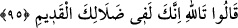

Rüzgârla gelen o hoş kokuyu içine çekti.
Onda mestlik belirtileri görününce,
Bir mürid o anda şeyhe sordu:
Ona dedi ki: “Bu hoş haller nedir,
Beş duyu ile altı yönden dışarı?”
Yüzün bazen kızarıyor, bazen sararıyor, bazen de beyazlaşıyor.
Bu hâl nedir, neyi haber veriyor?
Sen bir şey kokluyorsun, fakat görünürde gül yok!
Bu koku gaipten; hakikî güllerin açtığı gül bahçesindendir.
Bayezid dedi ki: “Bana şaşılacak bir koku geldi.
Hz. Mustafa’ya geldiği gibi Yemen’den.
Hz. Muhammed dedi ki: “Sabâ rüzgarının eliyle,
Yemen’den bana ilâhî bir koku geliyor.”
Üveys’ten ve Karen’den gelen şaşılacak bir koku
Peygamberi mest etti, neşelendirdi.
Bâyezid dedi ki: “Şu taraftan bana bir dost kokusu geliyor,
Bu köyden, mânevî bir padişah yetişecektir!
Bu kadar yıl sonra, burada bir pâdişah doğacak,
Göklere çadır kuracaktır!
Onun yüzü, Hakk’ın gül bahçesinin gülleri gibi açılıp saçılacak,
Makamca benden de üstün olacak!” dedi.
“Onun adı nedir?” diye sordular da “Adı, Ebü’l-Hasan’dır!” dedi.
Kaşının, çenesinin ne şekilde olduğunu târif etti.
Onun boyunu, rengini, şeklini,
Onun saçını, yüzünü bir bir anlattı.
Onun iç huylarını, mânevî sıfatlarını,
Yolunu, yerini, makamını, varını yoğunu hep açıkladı.
95. “Vallahi sen, hâlâ eski şaşkınlığın içindesin!” dediler.”
Yâkub (a.s.)’ın yanında bulunanlar: “Vallahi sen, hâlâ eski şaşkınlığın içindesin!”
dediler.” Yûsuf’u aşırı sevdiğinden, onu çok andığından ve kırk veya seksen yıl
geçtikten sonra onunla buluşmayı umduğun için böyle haller sende zuhur ediyor, dediler.
Çünkü onlara göre Yûsuf çoktan ölmüştü.
Burada âşığı mutlaka kınayıp kötüleyenler olacağına işaret edilmektedir.
Sen ey âşıkları kınayıp duran! Senin neyine
Allah’ın şaşırttıklarını irşâda kalkmak?!